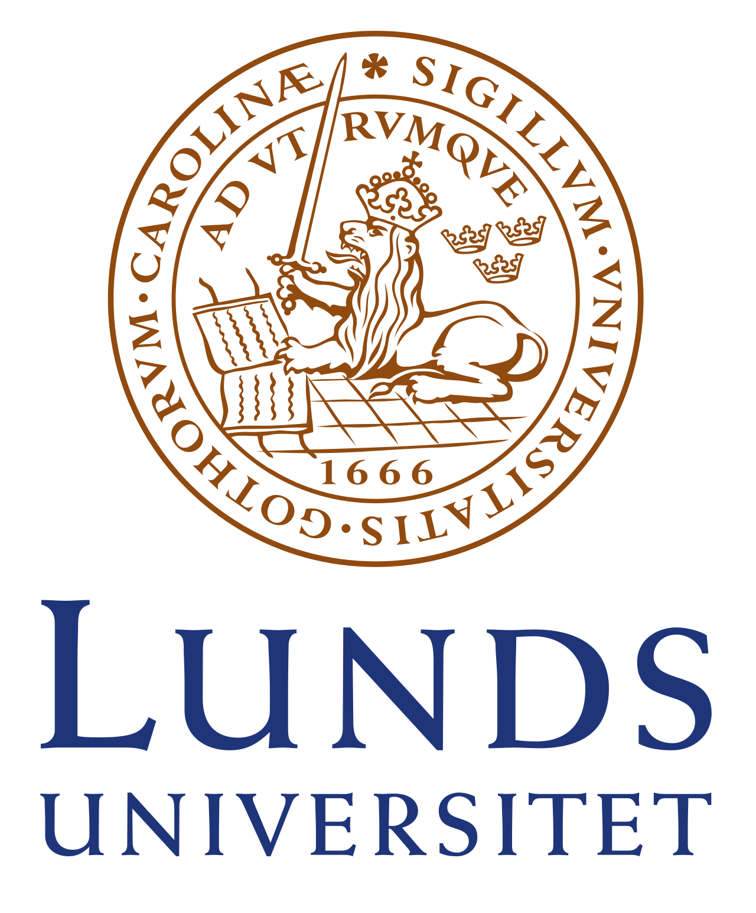

MSc in Engineering Physics
Politecnico di Milano. Photonics and nano-optics track, completed with honors.
Attosecond physics | Soft X-ray science | Laser technology
SLAC National Accelerator Laboratory, Stanford University
Federico Vismarra studies electron motion in matter on attosecond timescales, using soft X-ray pulses, free-electron lasers, ultrafast optics, and strong-field light-matter interaction.
About
Federico Vismarra is a scientist and physics engineer working in attosecond physics, soft X-ray science, and laser technology. His research focuses on electronic motion in atoms, molecules, and materials at ultrashort timescales.
He is currently at SLAC National Accelerator Laboratory, Stanford University, working with ultrafast laser methods and free-electron laser experiments. Before SLAC, Federico worked at ETH Zurich and Politecnico di Milano, where he completed a PhD in Physics on attosecond pulse generation for spectroscopy of optoelectronic molecular systems.
Career Timeline
Politecnico di Milano. Photonics and nano-optics track, completed with honors.

Lund University. High-order harmonic generation and high-intensity EUV physics.
Politecnico di Milano. Attosecond pulse generation for spectroscopy of optoelectronic molecular systems.
Current Research
At SLAC's Linac Coherent Light Source, Federico works on attosecond science with soft X-ray free-electron laser experiments. His current research uses ultrafast light to probe electronic dynamics in matter.
Course Notes
These are not Federico's research papers. They are course-style notes and topic explainers he wrote while working through key ideas in optics, quantum physics, superconductivity, spintronics, and light-matter interaction.